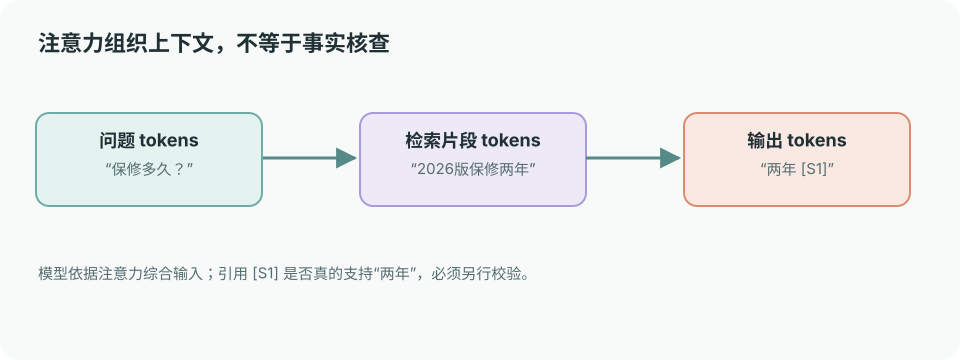
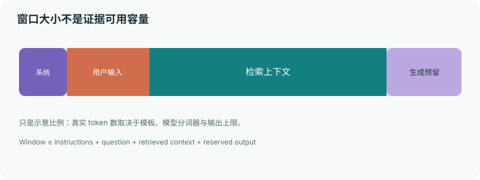

FOUNDATIONS / 02
大语言模型怎样利用上下文？
从 token、注意力和上下文预算出发，解释为什么“正确证据已经进入 Prompt”仍不等于答案正确。包含精确形状、MathML 与可运行预算示例。
SECTION
为什么模型读了上下文仍会答错
用户问“2026 版商品的保修期是多少”，系统已经把正确政策放进模型输入，模型却引用了相邻的 2025 版段落。这个问题不一定是检索失败：它可能发生在模型如何利用已经给到的上下文这个环节。
理解这一现象，需要区分三个层次：文本先被切成 token，Transformer 以注意力整合这些 token 的上下文表征，解码器再根据前文预测下一个 token。任何一步都不自带“事实已核实”的语义保证。
SECTION
Token 与上下文窗口
Token 是模型分词器处理的离散符号，不等于一个汉字、一个单词或一个固定长度字节串。不同模型与分词器可能把同一句中文切成不同数量的 token；因此不能用“一个汉字固定对应两个 token”这类公式估算成本。
模型的上下文窗口约束单次处理的总输入/输出容量。一个工程请求至少包含系统指令、用户问题、检索证据，以及为输出预留的容量。函数/工具调用、引用标记、模板、历史会话也可能消耗预算。具体计数取决于模型 API 的实现。
SECTION
注意力机制与其局限
Transformer 的自注意力让一个 token 位置的表征综合其他位置的信息。给定查询矩阵 Q、键矩阵 K、值矩阵 V，最常见的缩放点积注意力形式是：
若 Q 为 nq×dk、K 为 nk×dk，则注意力分数矩阵为 nq×nk；softmax 沿每个查询位置对应的键轴归一化，再乘 nk×dv 的 V，输出 nq×dv。实际自回归模型还施加因果 mask，不能看未来 token。

注意力权重或某个回答的流畅度，都不能直接作为事实正确性的证明。因此工程上要保留清晰的来源边界，并对高风险断言执行单独核查。
SECTION
把窗口变成可用的预算
先预留输出，再扣除系统消息、问题和模板，剩余容量才能分给检索证据。一个保守的静态预算约束是：
所有 T 都是由对应模型 tokenizer/API 定义的 token 数；这只是预算守恒关系，不假定系统会接受任何接近上限的请求，也不暗示精确的费用估算。

| 预算要素 | 示例值 | 为什么要保留 |
|---|---|---|
| 窗口上限 | 8192 tokens | 示例假设，不对应特定模型 |
| 系统与模板 | 500 tokens | 安全边界、任务说明、引用格式 |
| 问题与历史 | 300 tokens | 用户问题与其它输入 |
| 预留回答 | 1500 tokens | 避免答案被上限截断 |
| 可放证据 | 5892 tokens | 剩余容量，实际还要检查消息包装开销 |
SECTION
长上下文证据位置
即使没有触及 token 上限，证据也可能难以被模型稳定使用。Lost in the Middle 在特定多文档问答与检索任务上展示：某些被测试模型在关键证据位于输入中间时表现下降。该结果是实验性的，不等于所有模型、全部任务都有固定的 U 型性能曲线。
可操作的工程做法并不是迷信“把所有证据放头尾”，而是减少无关片段、按实际任务评估重排序策略，同时测试证据位置、文档冲突与长度变化。对极长资料，可引入层级检索或多轮查询，而不是单纯增加 prompt 的字数。
SECTION
可重复的窗口预算演示
以下 Python 示例演示“预算扣减”，不依赖模型服务。输入的整数是人为设定的 token 假值，并非对自然语言真实计数：
def remaining_evidence_budget(window, system, question, output):
used = system + question + output
if min(window, system, question, output) < 0:
raise ValueError("token budget must be non-negative")
if used > window:
raise ValueError("no room for evidence")
return window - used
assert remaining_evidence_budget(8192, 500, 300, 1500) == 5892
print("evidence budget:", remaining_evidence_budget(8192, 500, 300, 1500))依赖：Python 3.10+ 标准库。真实系统要用选定模型的 token 计数 API，并为消息协议等开销留余量。
SECTION
设计准则与边界
模型可以读取长文本，但不能保证“看过”就“理解正确”；attention 为信息整合机制，不是事实校验机制。构建 RAG 时，应当同时测量输入预算、证据质量、答案引用、响应延迟与上下文位置敏感性。
完整系统还必须决定哪些证据先被索引、怎样进入候选集合以及怎样被重排。这将在检索与生成的双路径架构中具体展开。
参考资料与进一步阅读
- Vaswani et al., Attention Is All You Need (NeurIPS 2017) — 缩放点积注意力与 Transformer 原始结构
- Liu et al., Lost in the Middle (TACL 2024) — 上下文位置信息利用实验
- Microsoft Learn, Chunk Documents — 模型输入长度与 RAG 分块关联